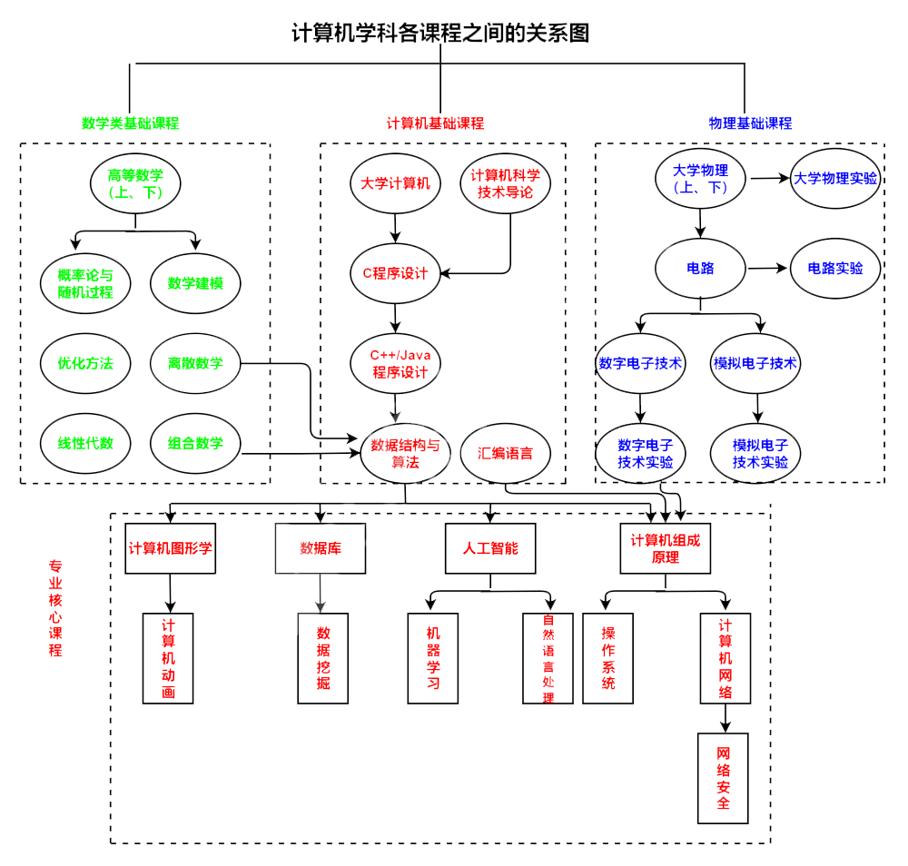
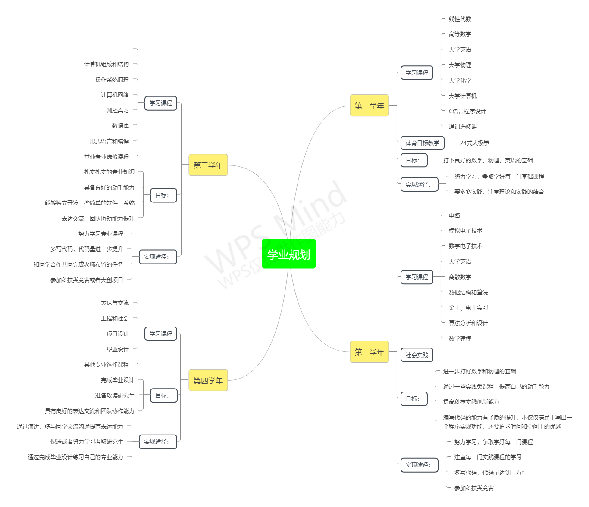

一.我对计算机专业的认识
计算机是20世纪最伟大的发明之一，它的出现彻底改变了人们的生活，可以说具有化时代的意义。随着科学技术的发展，计算机在当今社会的政治、经济、军事、教育以及医疗等方面都发挥着越来越强大的作用，我们的生活也越来越依赖计算机，比如我们上网课用的“腾讯会议”，我们做核酸用的“西安市一码通”，没有计算机的参与绝对完不成。因此，我们离不开计算机，就像我们离不开电一样。正是计算机有着非凡无比的功能，我才满怀着热血选择了计算机，我相信计算机以及学计算机的人的前途一定是无量的。
经过了一年多时间的学习，我对计算机这个专业有了一些初步的认识，我觉得计算机最重要的莫过于软件和硬件。硬件决定了你这个计算机能运行多快，能存储多大容量的东西；而软件则是依靠硬件为人们提供服务的工具，好的软件往往作用无穷，比如Matlab ,QQ。而软件又由一个个子程序组成，程序由算法和数据结构组成，算法是解决方案准确而完善的描述，数据结构则是计算机存储数据以及数据之间关系的一种方式，而决定他们好坏的，主要是两个指标：时间复杂度和空间复杂度，这些都是我们今后学习研究的重点。 虽然计算机专业有着光明的前景，但是我们也要努力学习。学习计算机，除了学习掌握扎实的专业知识外，我们要拥有以下几个能力：1.以自主学习的能力。由于许多要用的知识，老师不一定讲过，因此要具备自我学习的能力。2.使用现代工具的能力.学习计算机,本质上就是利用计算机解决实际问题。要学会将现代工程工具以及信息技术工具应用于计算机开发和我们的生活中。3.团队协作能力。由于计算机软件的开发都是由几十人甚至成千上万的人完成的，因此软件开发并不是个体性活动，一个人是无法完成的，因此团队协作十分重要。4.表达交流的能力。既然软件开发是一个集体性活动，这就要求我们与不同人交流和，交流和沟通是团队协作的基础。
以上就是我对计算机专业非常浅薄的认识，“路漫漫其修远兮”，我将在大学四年里好好学习计算机，将来利用所学的知识更好地改造我们的社会。
二.计算机学科各课程关系图

四.我的学业规划
